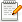

If a URL contained in the list is to be loaded a recplacement image is send instead.
The image can be configured by selecting  in the context menu.
Regular Expressions can be used for list eintries.
The standard blockfile is
Example list entry:
^http://www.cnn.com/ads/This would block all URL starting (
^ means start of string)
with http://www.cnn.com/ads/.